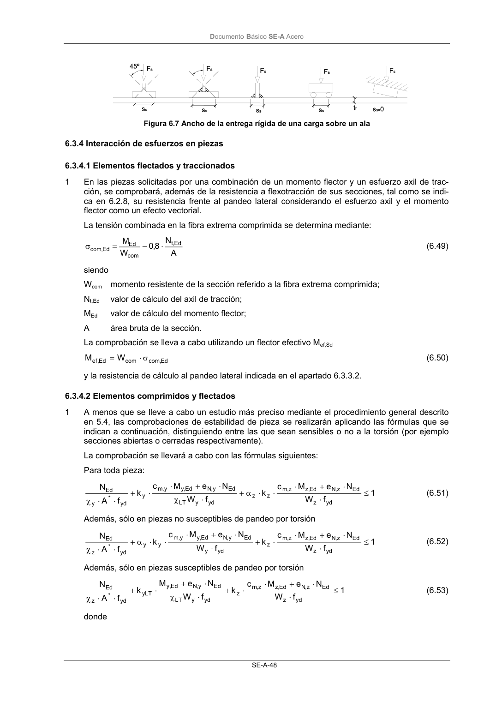
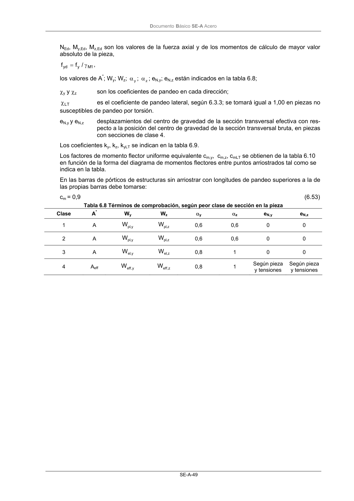

DB-SE-A · 6.3.4.2 Elementos comprimidos y flectados · versión 2007-10-23 · capa oficial
Formatos: JSON compacto · Markdown · PDF fuente
Ámbito del documento · texto del ámbito · documento y tablas
ID técnico a0088 · PDF pág. 50-52 · jerarquía no validada por persona · contrastado con el literal de la página 50 (candidato tipográfico); no validado por persona · padre: raíz
6.3.4.2 Elementos comprimidos y flectados 1 A menos que se lleve a cabo un estudio más preciso mediante el procedimiento general descrito en 5.4, las comprobaciones de estabilidad de pieza se realizarán aplicando las fórmulas que se indican a continuación, distinguiendo entre las que sean sensibles o no a la torsión (por ejemplo secciones abiertas o cerradas respectivamente). La comprobación se llevará a cabo con las fórmulas siguientes: Para toda pieza: 1 f W N e M c k f W N e M c k f A N yd z Ed z, N Ed ,z z, m z z yd y LT Ed y, N Ed ,y y, m y yd * y Ed ≤ ⋅ ⋅ + ⋅ ⋅ ⋅ α + ⋅ χ ⋅ + ⋅ ⋅ + ⋅ ⋅ χ (6.51) Además, sólo en piezas no susceptibles de pandeo por torsión 1 f W N e M c k f W N e M c k f A N yd z Ed z, N Ed ,z z, m z yd y Ed y, N Ed ,y y, m y y yd * z Ed ≤ ⋅ ⋅ + ⋅ ⋅ + ⋅ ⋅ + ⋅ ⋅ ⋅ α + ⋅ ⋅ χ (6.52) Además, sólo en piezas susceptibles de pandeo por torsión 1 f W N e M c k f W N e M k f A N yd z Ed z, N Ed ,z z, m z yd y LT Ed y, N Ed ,y yLT yd * z Ed ≤ ⋅ ⋅ + ⋅ ⋅ + ⋅ χ ⋅ + ⋅ + ⋅ ⋅ χ (6.53) donde DocumentoBásico SE-A Acero SE-A-49 NEd, My,Ed, Mz,Ed son los valores de la fuerza axial y de los momentos de cálculo de mayor valor absoluto de la pieza, 1 M y yd / f f γ = , los valores de A*; Wy; Wz; y α; z α; eN,y; eN,z están indicados en la tabla 6.8; χy y χz son los coeficientes de pandeo en cada dirección; LT χ es el coeficiente de pandeo lateral, según 6.3.3; se tomará igual a 1,00 en piezas no susceptibles de pandeo por torsión. eN,y y eN,z desplazamientos del centro de gravedad de la sección transversal efectiva con res- pecto a la posición del centro de gravedad de la sección transversal bruta, en piezas con secciones de clase 4. Los coeficientes ky, kz, kyLT se indican en la tabla 6.9. Los factores de momento flector uniforme equivalente cm,y, cm,z, cmLT se obtienen de la tabla 6.10 en función de la forma del diagrama de momentos flectores entre puntos arriostrados tal como se indica en la tabla. En las barras de pórticos de estructuras sin arriostrar con longitudes de pandeo superiores a la de las propias barras debe tomarse: cm = 0,9 (6.53) Tabla 6.8 Términos de comprobación, según peor clase de sección en la pieza Clase A* Wy Wz αy αz eN,y eN,z 1 A y, pl W z, pl W 0,6 0,6 0 0 2 A y, pl W z, pl W 0,6 0,6 0 0 3 A y, el W z, el W 0,8 1 0 0 4 Aeff y, eff W z, eff W 0,8 1 Según pieza y tensiones Según pieza y tensiones DocumentoBásico SE-A Acero SE-A-50 Tabla 6.9 Coeficientes de interacción según peor clase de sección en la pieza Cla- se Tipo de sec- ción ky kz kyLT I, H, abier- tas


PDF fuente redistribuible: copia fiel enlazada en esta página (SHA256 verificado).